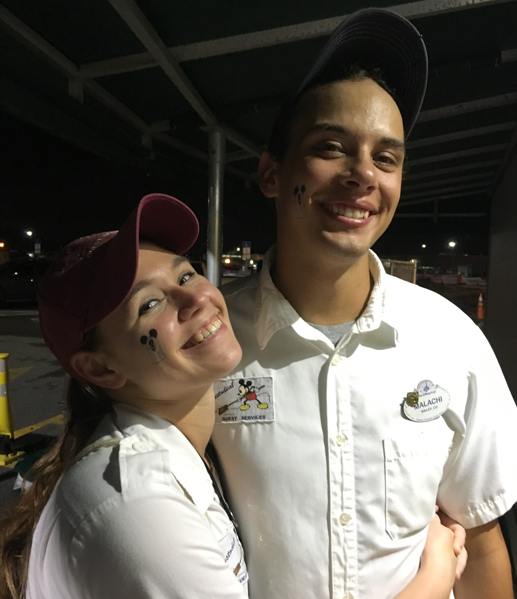
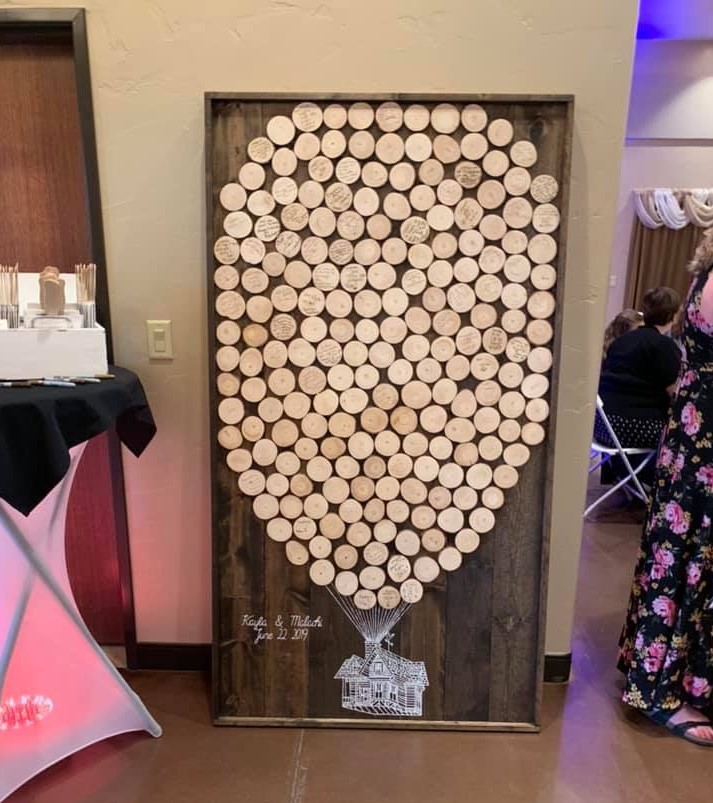

Spending New Year's at Disney World
|  |
This is the story of the time I worked New Years Eve at Disney World, my attempt to stay in control of the crazy events that transpired, and how they lead to one of the best nights of my life. On a typical day we would have 40 to 50 thousand guests dispersed throughout the park. I loved creating magic for guests, but in general I am a shy, non-confrontational person. I was chosen to be on a specialized team to keep the area in front of the castle from being completely destroyed. This meant pulling trash from cans that were impossible to get to, keeping people within the taped off areas and keeping our guests safe. The last thing they told us was you might have to yell at some guests and you probably will not be able to keep up with everything tonight. I felt very out of my element. By 11 A.M. the park had already hit capacity. I was surrounded by about 90,000 people. My cans were filling up so fast, I had to pull them around every 15 minutes. As we got closer to fireworks time, the thousands of people who had been riding rides all day poured onto Main Street. My cans were overflowing, I had angry guests not able to find a spot for the fireworks or fighting me about staying within the taped lines. And I’ll tell you the last thing a guest wants to hear is “well you should have been here 6 hours ago”. I had a dad putting his child on top of lampposts to get a better view. This was that moment I had to yell, and I did, FEET ON THE GROUND! And he listened! My partner from another section radioed me and asked for help getting to her cans. As I was helping, all the sudden the guests around me started to panic and tried to get my attention. My partner had climbed into the planters and she had fallen down a hole. I climbed up and luckily, she had caught herself and was hanging on to the side. I helped pull her out and she was all scraped up. We had to push through the crowd to go bandage her up back-stage. It turned out maintenance had uncovered that hole the night before and forgot to cover it back up. It was at that moment when I fully accepted that I had no control over what was going to happen tonight. After that, the night turned out amazing. We were laughing and having fun with the guests. They would cheer for us as we crawled through the planters to pull cans. We danced around to the DJ music. New Year’s Fireworks go all the way around the park, you are literally surrounded. When those fireworks went off it was the most amazing feeling because not only were those the best fireworks I had ever seen, but we got to watch the guests faces as they saw them too. Everything felt like it was in slow motion and I just took it all in. Even though everything was about to become even more hectic as everyone tried to leave the park it didn’t even matter. Everything was perfect. |
 |
{kind=link}
{kind=link}